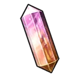

Pedra lunar perfeita
Pedra Lunar · Tier 12 · Nível 30
Magia lunar cristalizada e cheia de poder. Um componente essencial para fusões.
Economia
Valor
300.000
Tempo de fabricação
8h 40min
XP do comerciante
79.000
Trabalhadores: Dragoa lunar 25, Dragão solar 21, Mestre 18
Receita


Marcos do projeto
7
Tempo de fabricação -30%
18
-87 Ervas
32
-16 Óleo
50
Desbloqueia projeto: Pedra Lunar Suprema
80
Chance de fabricação múltipla +20%